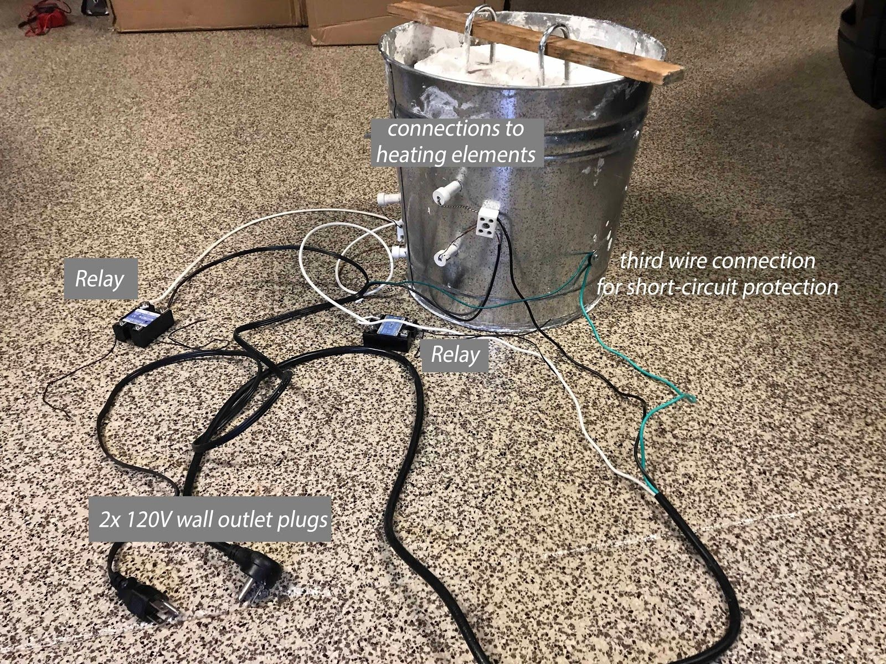
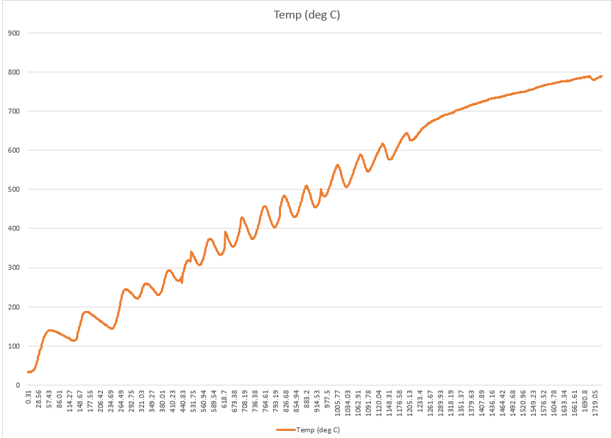
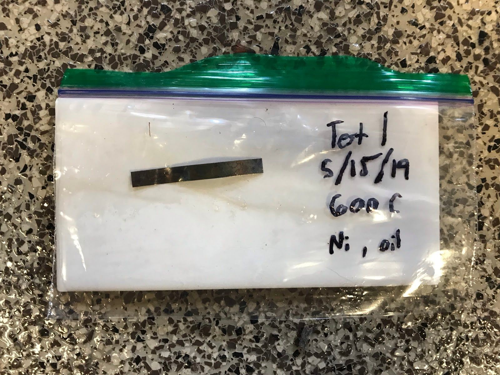
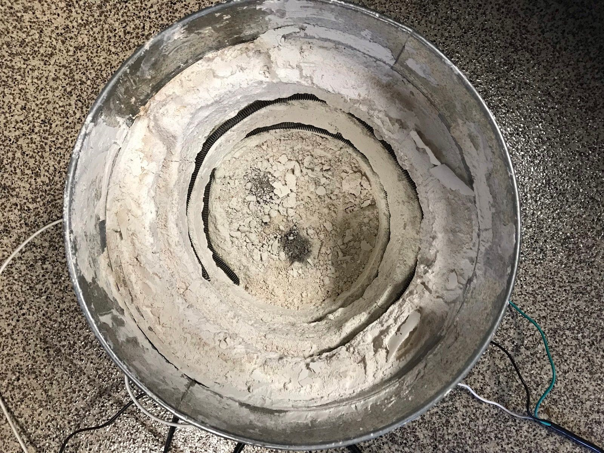

During my senior year of high school, a couple of friends and I worked to create an electric kiln from scratch in order to replicate a process for producing graphene that we read about in a journal paper. After hard work and extensive troubleshooting, our team was successful in approximating the heating cycle described in the paper, and we observed indicators that suggested the presence of graphene oxide on our samples.
We built our kiln from basic materials, using Plaster of Paris as a cheap refractory material. The electrical system used 120V power from a standard wall outlet to power the heating coils. An ESP32 development board was used to create a WiFi-accessible control software.

The kiln with labeled components.

We were able to get close to the desired process: a 26-minute ramp to 800 C, followed by a 4 minute hold at 800 C, and then rapid cooling.

An example of a sample that we created and later examined using a Raman microscope. This sample is a nickel strip with soybean oil that was heated to 600 C.

The inside of the kiln.